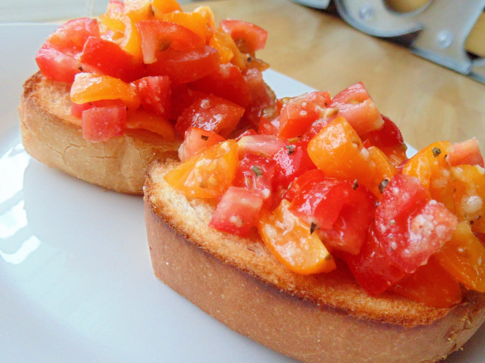

Bruschetta

Description
This is a great garlicky bruschetta recipe. Serve it on slices of French bread. It's a wonderful accompaniment to tomato pastas.
Ingredients
- 2 tomatoes, cubed
- 1 teaspoon dried basil
- 4 tablespoons grated Parmesan cheese
- 2 tablespoons olive oil
- 1 clove garlic, crushed
- seasoning salt to taste
- ground black pepper to taste
Directions
- In a medium bowl, mix tomatoes, dried basil, Parmesan cheese, olive oil, garlic, seasoning salt and ground black pepper. Cover and chill in the refrigerator 8 hours, or overnight, before serving.
Return to main page.